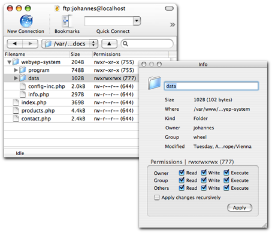
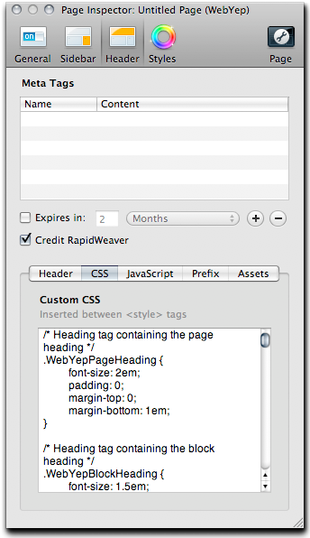

You can use the WebYep Online Installer https://secure.obdev.at/WebYepInstaller/ to install the webyep-system folder on your web server.
The package that contained the WebYep RapidWeaver Plugin (WebYep.rwplugin) also contained a folder named webyep-system.
To install WebYep on your web server, simply upload the webyep-system folder onto your web server (usually via FTP) to the root of your web site (where your home page's file, index.html, is located).
To prepare WebYep, you need to change the access privileges of the "data" folder inside the uploaded webyep-system folder on the web server to the access mode "777" ("read, write and execute" for "owner, group and others").
Here's an example using CyberDuck as the FTP application:
Navigate to the data folder inside the webyep-system folder, Control (or right) click it, and choose "Info" from the appearing context menu.
In the appearing info panel, set the access permissions and click "Apply".

Please also read the WebYep documentation regarding installation and preparation of WebYep - especially regarding any security concerns about setting the access permissions this way!
The webyep-system folder contains a file named config-inc.php. Open this file in some text editor (like TextEdit.app) to setup WebYep. Adopt the following entries to your needs:
The username of the editor user which must be entered to start editing the page's content:
$webyep_sAdminName = "admin";
The password which must be entered to start editing the page's content:
$webyep_sAdminPassword = "";
The character set used in your pages:
$webyep_sCharset = "utf-8";
As RapidWeaver usually uses the utf-8 character set for its pages, you can also leave this setting to "utf-8".
After making the changes, don't forget to upload the file onto the web server again.
See the WebYep documentation for details on the other configuration settings.
The WebYep Rich Text Element supports the third party in-browser HTML Editors TinyMCE and CKeditor. Those editors are not bundled with WebYep. To use one of them, simply download the editor package from the its creator's web site and place it into WebYep's opt folder - WebYep will then automatically recognize its existence and use it for the Rich Text Element's editor window.
For details in the installation of one of these in-browser HTML editors, please see the reference of the Rich Text Element in WebYep's online documentation.
The WebYep Image Element (as well as the Gallery Element) supports the third party JavaScript image zooming effects Lightbox (based on Prototype/Scriptaculous) and FancyBox (based on jQuery). If one of these is installed, the detail (zoomed) image of a WebYep Image or Gallery Element will not open in a separate window, but in the page itself as an overlay.
These effects are not bundled with WebYep but need to be downloaded from their creator's web sites and installed into WebYep's opt folder.
For details on the installation of one of these effects, please see the reference of the Image Element in WebYep's online documentation.
You can define the look of each element of the WebYep page by defining appropriate CSS styles for the page. Each element has it's own CSS classes. When creating a new WebYep page, an example CSS code is copied to the page's custom CSS field - use the Page Inspector (Head tab) to edit this CSS code:

See the WebYep Documentation for details on the WebYep Elements and their CSS classes.
You can place the WebYep Logon Button (like any other WebYep Element!) into any styled text page or sidebar by inserting the following PHP code fragment:
<?php webyep_logonButton(true); // WebYepV1 ?>
To make the button invisible, simple change the true to false.
Important: You need to make sure the page's filename extension is set to ".php" and the page's Page Prefix Code contains the same PHP code as a standard WebYep page does (simply copy it over from some WebYep page in the Page Inspector, "Page Header" tab, "Prefix" field).
Note: You will not see the WebYep Logon Button in RapidWeaver's preview - publish the page to the web server and open it with your web browser to see the button.
See the WebYep Documentation for details on the PHP code fragments of other WebYep Elements.
The WebYep Documentation containing detailed information on each WebYep Element, installation, backup and more (also technical PHP details) can be downloaded and viewed online at the Objective Development Web Site.
In every editor window of WebYep in the web browser users can click the question mark at the lower left corner to get online help for the current editor.
© 2011, Objective Development Software GmbH, http://www.obdev.at